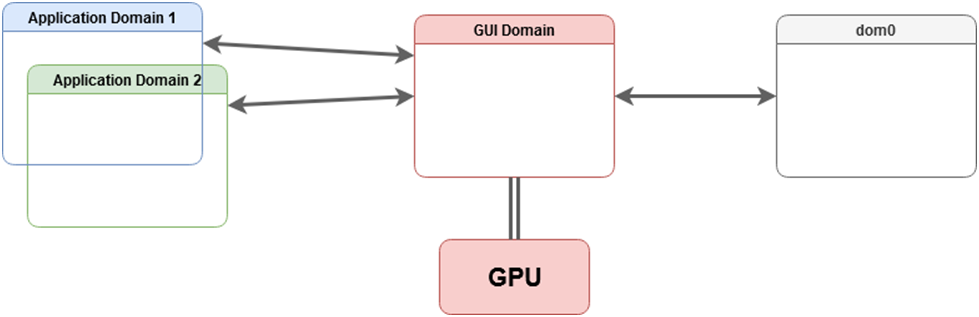

GUI domain
Warning
This page is intended for advanced users.
On this page, we describe how to set up a GUI domain. In all the cases, the base underlying TemplateVM used is Fedora with XFCE flavor to match current desktop choice in dom0. That can be adapted very easily for other desktops and templates. By default, the configured GUI domain is a management qube with global admin permissions rwx but can be adjusted to ro (see Introducing the Qubes Admin API) in pillar data of the corresponding GUI domain to setup. For example, pillar data for sys-gui located at /srv/pillar/base/qvm/sys-gui.sls. Please note that each GUI domain has no NetVM.
Note: The setup is done using
SaltStackformulas with thequbesctltool. When executing it, apply step can take time because it needs to download latest Fedora XFCE TemplateVM and install desktop dependencies.
Hybrid GUI domain (sys-gui)
Here, we describe how to setup sys-gui that we call hybrid mode or referenced as a compromise solution in GUI domain.

In dom0, enable the formula for sys-gui with pillar data:
$ sudo qubesctl top.enable qvm.sys-gui
$ sudo qubesctl top.enable qvm.sys-gui pillar=True
then, execute it:
$ sudo qubesctl --all state.highstate
You can now disable the sys-gui formula:
$ sudo qubesctl top.disable qvm.sys-gui
Note that the default_guivm qubes global property has not been changed. You can confirm this with:
$ qubes-prefs default_guivm
If you want to change the global property, use the same command specifying sys-gui.
To use sys-gui, shutdown all your running qubes , and log out. Before you log back in change the session type to GUI domain (sys-gui) in the top right corner of the login screen. Once logged in, you are running sys-gui as a fullscreen window and you can work as if you were in the dom0 desktop.
Note: In order to go back to
dom0desktop, you need to logout and then change thelightdmsession to Session Xfce.
GPU GUI domain (sys-gui-gpu)
Here, we describe how to setup sys-gui-gpu which is a GUI domain with GPU passthrough in GUI domain.
Note: the purpose of
sys-gui-gpuis to improve Qubes OS security by detaching the GPU from dom0, this is not intended to improve GPU related performance within qubes, and this will not improve performance.

In dom0, enable the formula for sys-gui-gpu with pillar data:
$ sudo qubesctl top.enable qvm.sys-gui-gpu
$ sudo qubesctl top.enable qvm.sys-gui-gpu pillar=True
then, execute it:
$ sudo qubesctl --all state.highstate
You can now disable the sys-gui-gpu formula:
$ sudo qubesctl top.disable qvm.sys-gui-gpu
One more step is needed: attaching the actual GPU to sys-gui-gpu. This can be done either manually via qvm-pci (remember to enable permissive option), or via:
$ sudo qubesctl state.sls qvm.sys-gui-gpu-attach-gpu
The latter option assumes Intel graphics card (it has hardcoded PCI address). If you don’t have Intel graphics card, please use the former method with qvm-pci (see How to use PCI devices).
Note: Some platforms can have multiple GPU. For example on laptops, it is usual to have HDMI or DISPLAY port linked to the secondary GPU (generally called discrete GPU). In such case, you have to also attach the secondary GPU to
sys-gui-gpuwith permissive option.
At this point, you need to reboot your Qubes OS machine in order to boot into sys-gui-gpu.
Note: For some platforms, it can be sufficient to shutdown all the running qubes and starting
sys-gui-gpu. Unfortunately, it has been observed that detaching and attaching some GPU cards fromdom0tosys-gui-gpucan freeze computer. We encourage reboot to prevent any data loss.
Once, lightdm is started, you can log as user where user refers to the first dom0 user in qubes group and with corresponding dom0 password. A better approach for handling password is currently discussed in QubesOS/qubes-issues#6740.
VNC GUI domain (sys-gui-vnc)
Here, we describe how to setup sys-gui-vnc that we call a remote GUI domain or referenced as with a virtual server in GUI domain.

In dom0, enable the formula for sys-gui-vnc with pillar data:
$ sudo qubesctl top.enable qvm.sys-gui-vnc
$ sudo qubesctl top.enable qvm.sys-gui-vnc pillar=True
then, execute it:
$ sudo qubesctl --all state.highstate
You can now disable the sys-gui-vnc formula:
$ sudo qubesctl top.disable qvm.sys-gui-vnc
At this point, you need to shutdown all your running qubes as the default_guivm qubes global property has been set to sys-gui-vnc. Then, you can start sys-gui-vnc:
$ qvm-start sys-gui-vnc
A VNC server session is running on localhost:5900 in sys-gui-vnc. In order to reach the VNC server, we encourage to not connect sys-gui-vnc to a NetVM but rather to use another qube for remote access, say sys-remote. First, you need to bind port 5900 of sys-gui-vnc into a sys-remote local port (you may want to use another port than 5900 to reach sys-remote from the outside). For that, use qubes.ConnectTCP RPC service (see Firewall. Then, you can use any VNC client to connect to you sys-remote on the chosen local port (5900 if you kept the default one). For the first connection, you will reach lightdm for which you can log as user where user refers to the first dom0 user in qubes group and with corresponding dom0 password.
Note:
lightdmsession remains logged even if you disconnect yourVNCclient. Ensure to lock or log out before disconnecting yourVNCclient session.WARNING: This setup raises multiple security issues: 1) Anyone who can reach the
VNCserver, can take over the control of the Qubes OS machine, 2) A second client can connect even if a connection is already active and potentially get disconnected, 3) You can get disconnected by some unrelated network issues. Generally, if thisVNCserver is exposed to open network, it must be protected with some other (cryptographic) layer likeVPN. The setup as is, is useful only for purely testing machine.
Major Known issues
Cannot update dom0 from sys-gui
Power saving/screensaver issues
Other GUI domain issues
There are a number of other issues affecting use of the GUI domain, and some proposed enhancements. Please review these at QubesOS/qubes-issues using the label C: gui-domain .
Reverting sys-gui
The following commands have to be run in dom0.
Note: For the case of
sys-gui-gpu, you need to prevent Qubes OS autostart of any qube to reachdom0. For that, you need to boot Qubes OS withqubes.skip_autostartGRUB parameter.
Set default_guivm as dom0:
$ qubes-prefs default_guivm dom0
and for every selected qubes not using default value for GUI domain property, for example with a qube personal:
$ qvm-prefs personal guivm dom0
You are now able to delete the GUI domain, for example sys-gui-gpu:
$ qvm-remove -f sys-gui-gpu